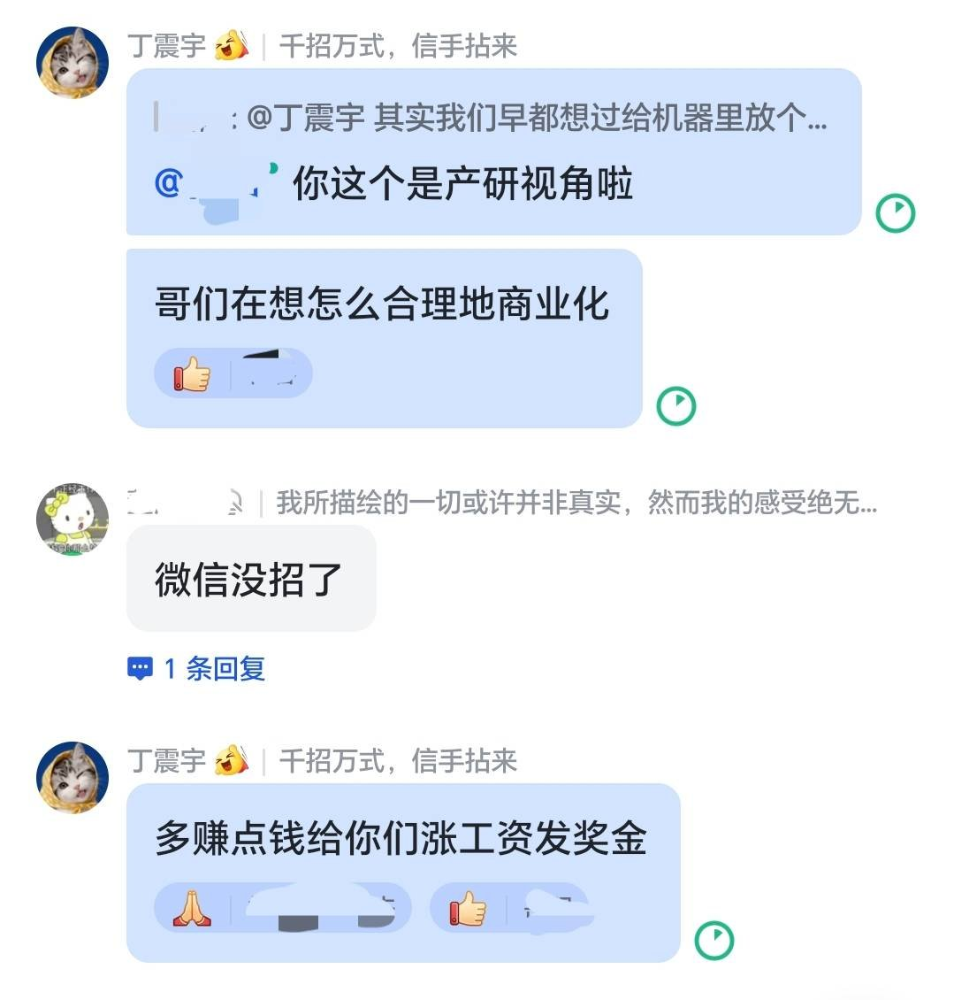

很多人其实意识不到CTO最核心的价值其实是技术的商业化能力
只有把技术到产品然后到商品的商业化能力拉满
才能赚钱，赚到钱了才能给员工更好的福利待遇

评论区
聊天记录（29 条）
参与者 13 人：Yamabuki Yuki (smurf)、Zebro、AsperforMias、小许、丁震宇、何陋轩主人、Xima（Zima’s ultimate and exclusive version）、Shengshenlan、Sen 说 AI、maY、踏雪寻仙、Jack Mo、inKerk | 硬核老王 · 时间范围 2026-11-05 22:54 至 2026-11-06 21:51 · 原始 29 条，保留 29 条
YYamabuki Yuki (smurf)2026-11-05 22:54
ZZebro2026-11-05 22:56
借用冯的有句话,完成大于完美,先完成赚到钱,再做更好的打磨
AAsperforMias2026-11-05 23:00
是这样. 最近开始发现,很多东西并不需要多少特别优雅的技术, 而是能可靠的用, 流量能转化留存, 产品能卖且用户画像清晰+付费能力在线
丁丁震宇2026-11-05 23:07
是的 很多人不敢迈出去这一步觉得丢人🤓其实管那么多干嘛呢先卖再说
YYamabuki Yuki (smurf)2026-11-05 23:09
速来，来测全新力作reirin coding agent
XXima（Zima’s ultimate and exclusive version）2026-11-06 08:29
商业的背后还有政治嗅觉对政策宏观调整对产业和风向的把握
SShengshenlan2026-11-06 09:09
SSen 说 AI2026-11-06 15:46
也不只是 CTO 吧，感觉高层的老板。都是要怎么的把技术转化为产品卖出去。
MmaY2026-11-06 17:39
我觉得最核心的价值是，如何协调好长期的技术演进和短期的商业目标，并推动他们能够互相促进。
踏踏雪寻仙2026-11-06 18:35
因为现实中有很多因素影响并约束，不一定能用上最好的技术。但只要能比原来的更好大家有得赚，其实就能有足够的商业回报
JJack Mo2026-11-06 18:52
基本上所有职能都为最终的商业化服务的，要不然更多是自我感动
JJack Mo2026-11-06 18:58
从更广义的“商业化”来说，行政也是要不断优化自己流程，减少组织内部的管理成本和运营成本，当然他们和营收没有直接关系hh
IinKerk | 硬核老王2026-11-06 20:45
程序员、技术总监和 CTO 虽然是技术的一条发展线，但是完全是不同的角色。不是真的做过这样的角色的人，他是不能够理解的。
IinKerk | 硬核老王2026-11-06 21:51
镜像说明：正文与图片按原文顺序本地托管；图片优先下载 orig 分辨率。
已镜像图片 1/1。
主帖短文全文；1 张配图（微信朋友圈截图）已本地化；用户点名收录评论，评论区 29 条按时间序全文收录（可折叠 chat）；无 note_tweet，不是 X Article。